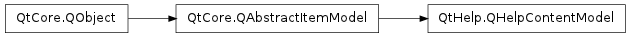

QHelpContentModel ¶

Synopsis ¶
Functions ¶
- def contentItemAt (index)
- def createContents (customFilterName)
- def isCreatingContents ()
Slots ¶
- def insertContents ()
- def invalidateContents ([onShutDown=false])
Signals ¶
- def contentsCreated ()
- def contentsCreationStarted ()
Detailed Description ¶
The PySide.QtHelp.QHelpContentModel class provides a model that supplies content to views.
- PySide.QtHelp.QHelpContentModel. contentItemAt ( index ) ¶
-
Parameters: index – PySide.QtCore.QModelIndex Return type: PySide.QtHelp.QHelpContentItem Returns the help content item at the model index position index .
- PySide.QtHelp.QHelpContentModel. contentsCreated ( ) ¶
- PySide.QtHelp.QHelpContentModel. contentsCreationStarted ( ) ¶
- PySide.QtHelp.QHelpContentModel. createContents ( customFilterName ) ¶
-
Parameters: customFilterName – unicode Creates new contents by querying the help system for contents specified for the customFilterName .
- PySide.QtHelp.QHelpContentModel. insertContents ( ) ¶
- PySide.QtHelp.QHelpContentModel. invalidateContents ( [ onShutDown=false ] ) ¶
-
Parameters: onShutDown – PySide.QtCore.bool
- PySide.QtHelp.QHelpContentModel. isCreatingContents ( ) ¶
-
Return type: PySide.QtCore.bool Returns true if the contents are currently rebuilt, otherwise false.